Hello! I'm Eva Chudina.
Graphic Designer
about me

HI
YO
x
dis is meh showing my works 2 the audience
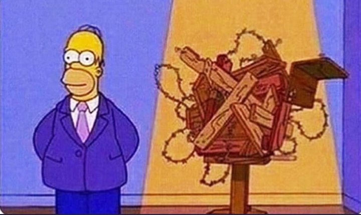
х
DESPITE MY GD PRACTICE
I ALSO ITERESTED IN PHOTOGRAPHY
х
notwithstanding my luv fo' btfl shotsof da nature of da city
х

I luv 2 explore\ find things tht luk odd \ weird \ or interesting 2 meh in sum wey in terms of contrast or associations which comes 2 meh
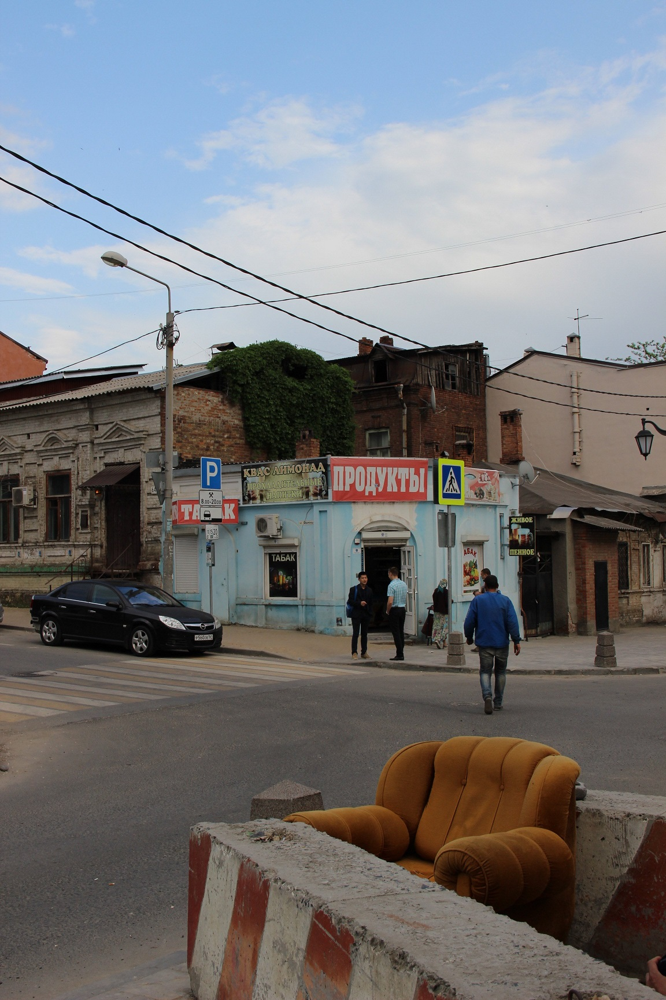
х
1 of my photo projects is ''juxtaposition''.
in dis project, i explored 2 cites (moscow and rostov-on-don) 2 find various juxtapositions b/t new n old thru photography. I outlined dis juxtaposition using colourful graphic shapes.
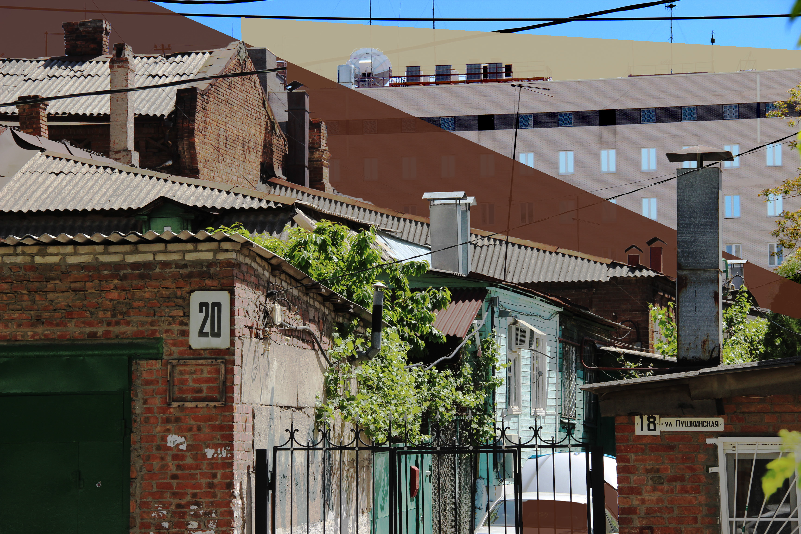
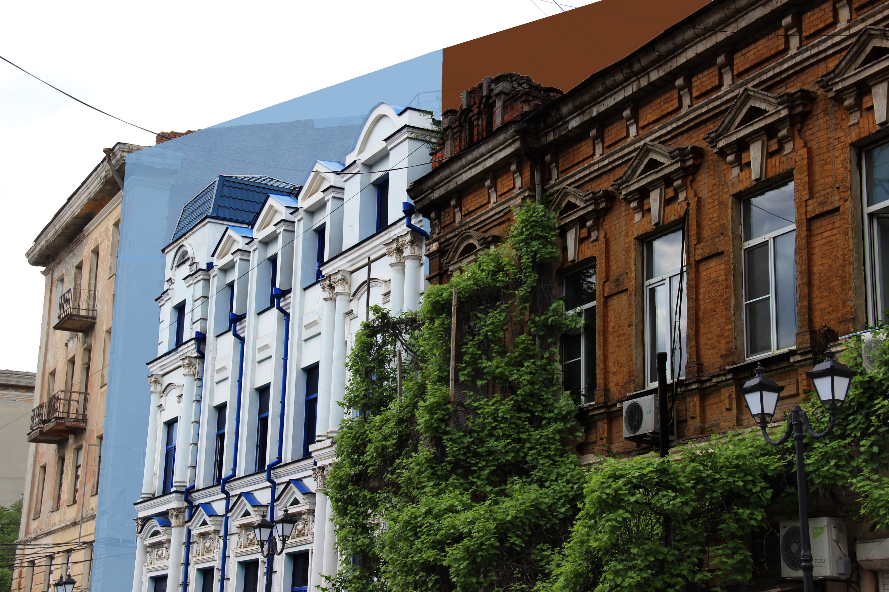
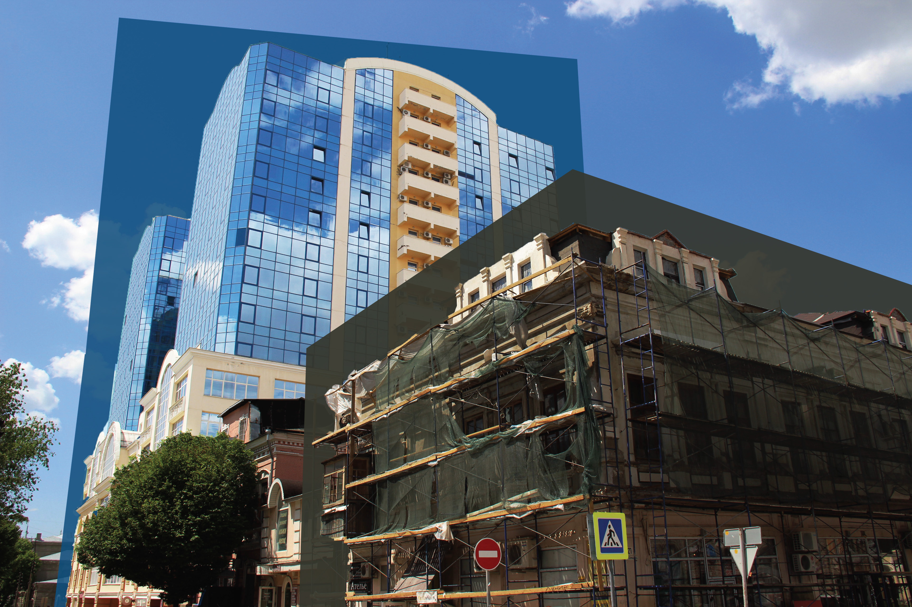
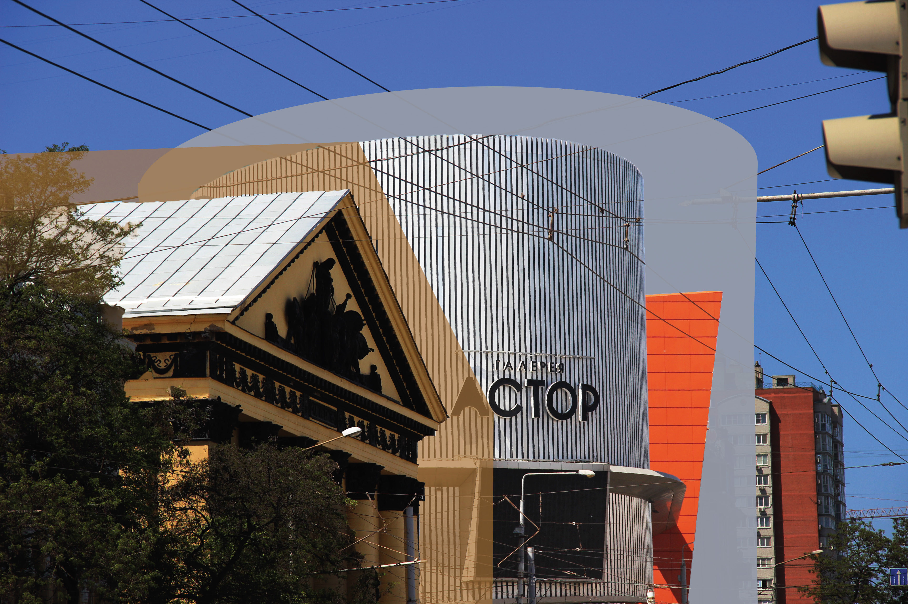
х
 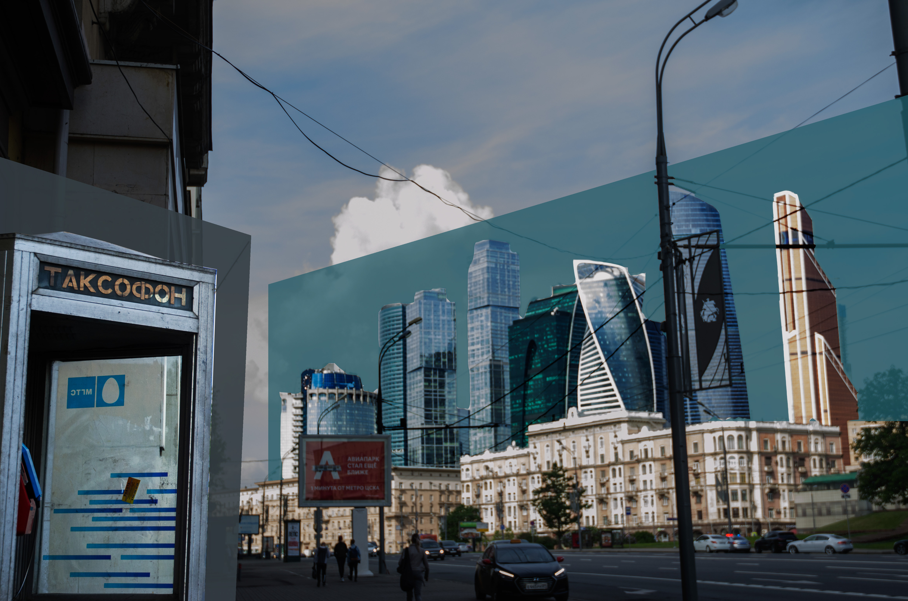
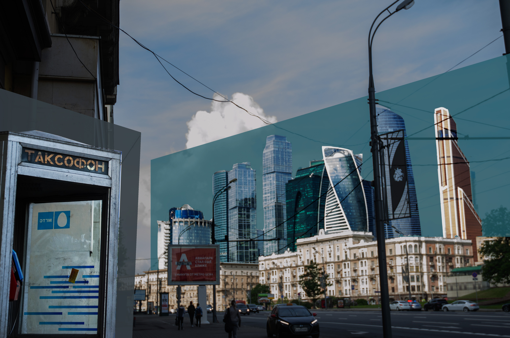
n yet alot of my fav projects somehow connected w/ an image.
х
Book about book.
In dis project, the task was 2 design and produce a remake of the book. Book tht i choose 2 make a new version of was “the abcs of beauty’’ writ10 in russian and published in 1998. Dis book interested meh by its colourful design, playfulness, aesthetic photos combined w/ all deez elements. I made a vid highlighting all of deez elements in pages of dis book in a 4m of animation: blacc and white page of the book appears and 1 by 1 coloured elements start 2 reveal its color page by page. I produced a re-make of dis book by removing text and leave only graphic elements w/o the min text
Saver.
In dis project, we explored screen saver presets and its functions. The preset i used called shifting tiles. I selected images of windows and place dem in different in a wey so it wud make a new composition each time it shifts.
Algopop.
Algopop project is about designing and coding an a telegram bot. Dis telegram bot min purpose is 2 entertin. Puggo fo' every1 bot sends 1 pic of the puggo daily. My code fo' dis bot thats programmed 2 take imagery frum my selections of 1000 different photos frum flickr(using its api) and when it posts a photo every day @ 9 am. Deez photos i took and selected frum multiply puggo lovers communities pages on the interwebs. The min goal was just 2 make a kawaii and funny bot tht was simple and sympathetic 2 a user.
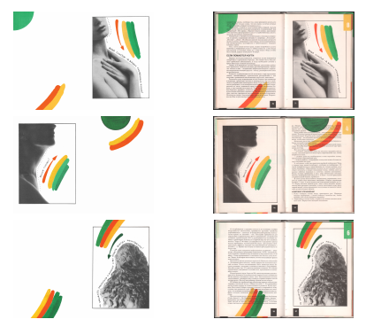
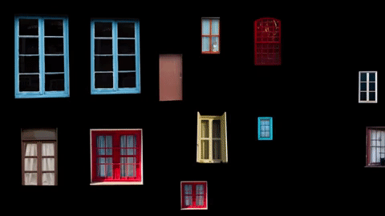
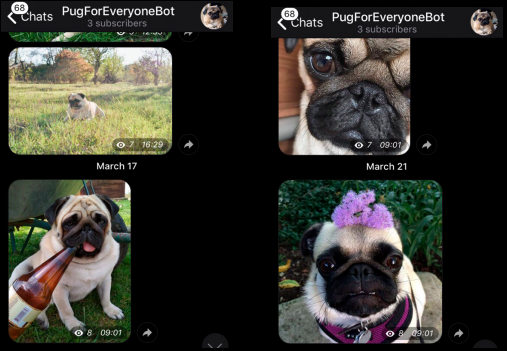
1 of my favorite theme 2 werk on is ecology as an ecological footprint, conscious consumption and 0 waste
х
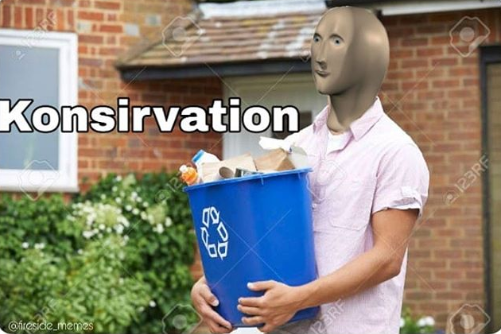
The world is overloaded w/ tones of things dat we oftn don’t need. I lk to thnk dat we cn minimize it n replace w/ sth more practical n less harmful 2da environment.
I made some of da projects based on these themes n working on it helped me folo these ideas in future.
х
so der r sum projects dedic8d 2 dis
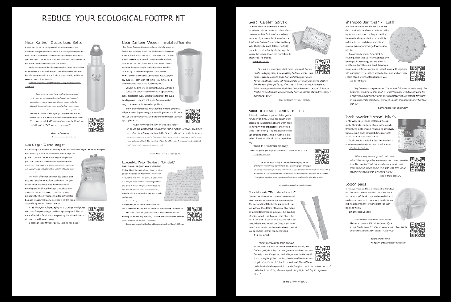
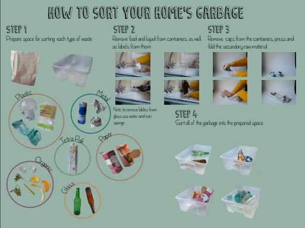

х
''how 2. ''
in dis project, ive made a magnet instruction on how 2 sort and prepr ur waste fo' recycling. As it mite b confusing fo' ppl whomst have never d1 it b4, i tried 2 make it so dis process wud b mor clear and understandable.
tools
the assignment was 2 make a catalogue containing things tht meet
the criteria & definitions outlined in the whole earth-chan catalog. My tools catalogue is based on the same theme: sustainable living or ‘‘zero waste’’ lifestyle. 0 waste is a philosophy tht encourages the redesign of resource lyfe cycles so tht all products r reused. My min goal was 2 find tools which wud b eco friendly and can b reusable(so less waste
wud b produced). Such regular things tht ppl can replace in our everyday lifestyles. My tools r 10 items separ8d into 2 themes: items tht have a use fo' something(reusable bottle and cup, bags, wax napkin) and items fo' personal hygienes(soap, shampoo, deodorant, toothbrush and tooth-powder, cotton pads.)
i was looking fo' specific items depending on sources of russian 0 waste community and items tht u can get @ moscow 2. I selected it depending on ratings and reviews of ppl on different eco theme-rel8d online shops. I added reviews of ppl on a few items tht wer needed 2 use directly 2 urself nor fo' something(bottle fo' drinking, shampoo fo' washing ur hair and e. g).
In sum of my projects, i tried 2 use recycled paper. N also in ''tools'' project, i used ''eco sans vera''' typeface tht reduces the amount of ink when its being printed.
х
 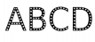
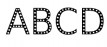
x
A lot of designers r still working fo' a word
tht believes resources r limitless
and waste wud disappear.
But the world is changing
and so as designers
we shud change our approaches 2
Tht we use all the time as a graphic designers is a paper and unfortun8ly the paper industry is the 4th-largest emitter of greenhouse gases and faced w/ clim8 change thats a big problem
also, tht direct mail junk mail and t1s of flyers tht n1 of us wants 100000000 trees r cut down every yr 2 produce something tht we dont even want
As well as a lot of other things tht cud b printed and produced differently
x
I BELIEBE THT AS DESIGNERS WE CAN MAKE AND SUGGESST MOR SUSTAINABLE DESIGN DECISIONS
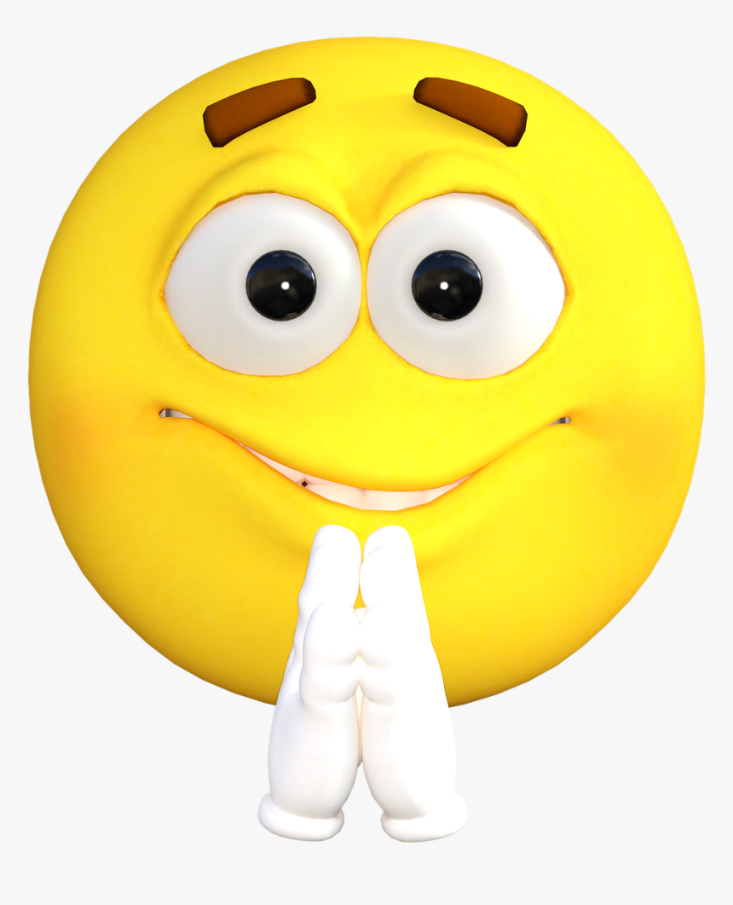 х
fo' example, i admir 'kolomenskoye moloko' yoghurt package. Neither it looks very noice but its made out of ceramic and can b reused unlimitedly. U can plant a flower in 1 of deez! how cute is tht!^^
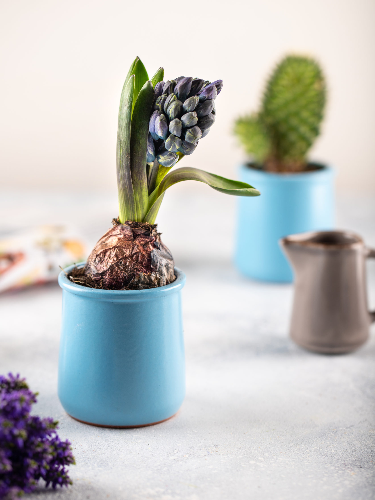 х
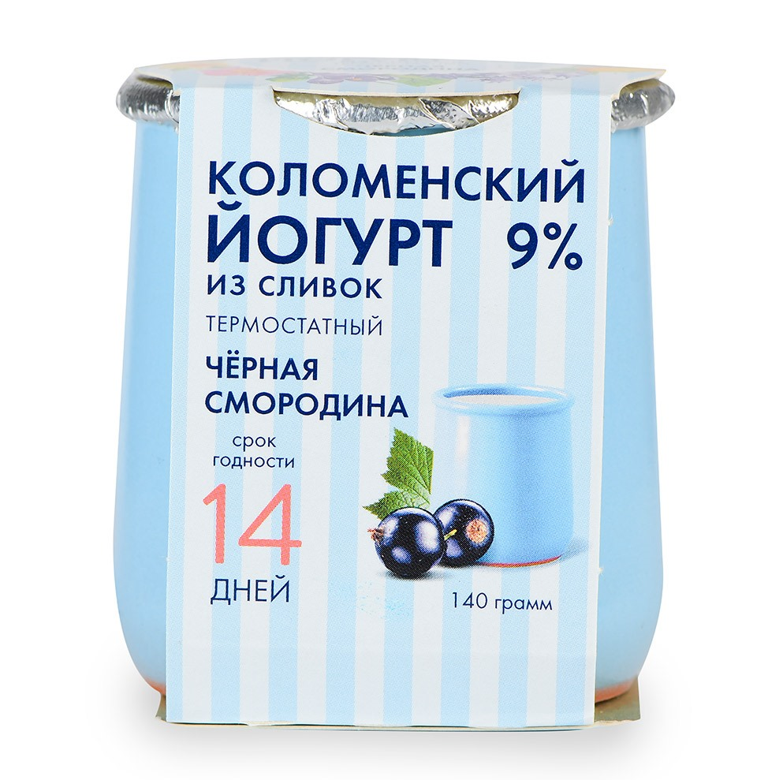 dis approach was used in soviet x when many goods wer sold in recycled containers or almost w/o it.
And dis container cud b sold fo' almost half the cost of the product or get a discount.
х
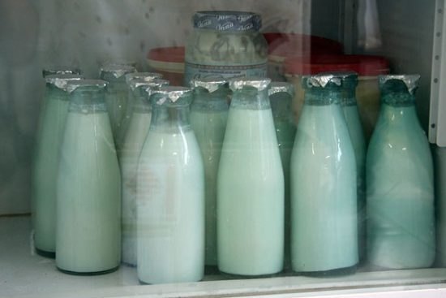 but of10 the design is filled w/ an eco-friendly theme
and is defined as greenwashing
х
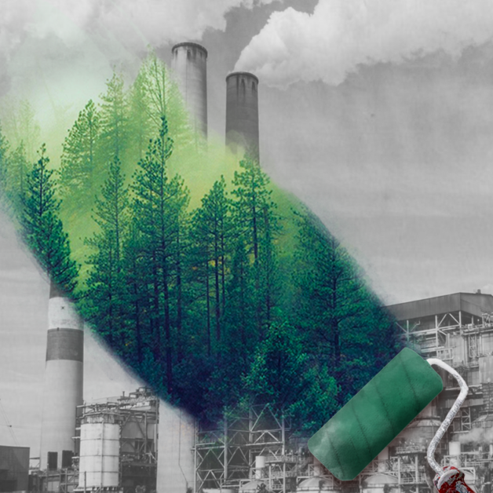 usually, they use labels liek eco, bio and so on.
fo' example wet wipes tht arent decomposing and made frum plastic :(
х
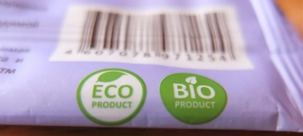 or 1 of the big misconceptions is tht craft paper 10d 2 b labelled as ''eco''. But taught truth is tht craft paper isnt recyclable and a lot of resources r spent on its production(such as w8r). And sometimes plastic is mor environmentally friendly then paper.
х
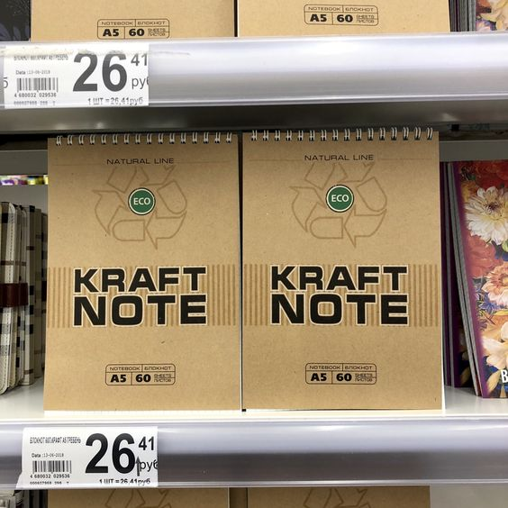